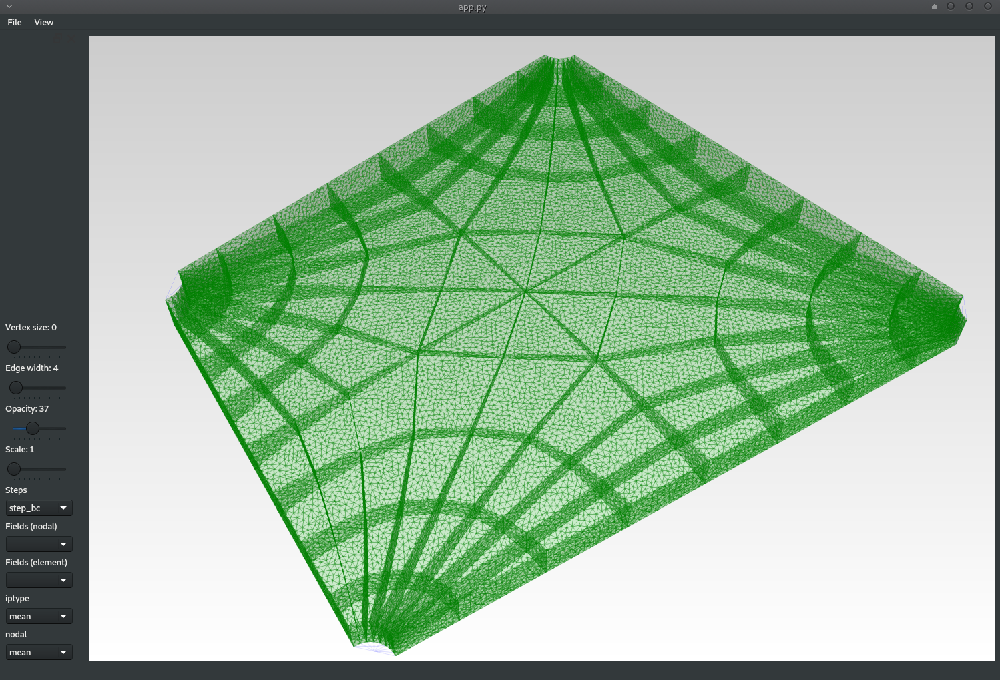
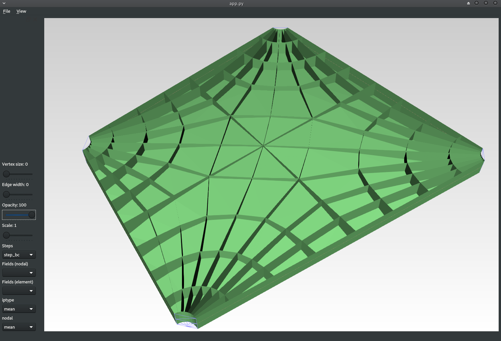
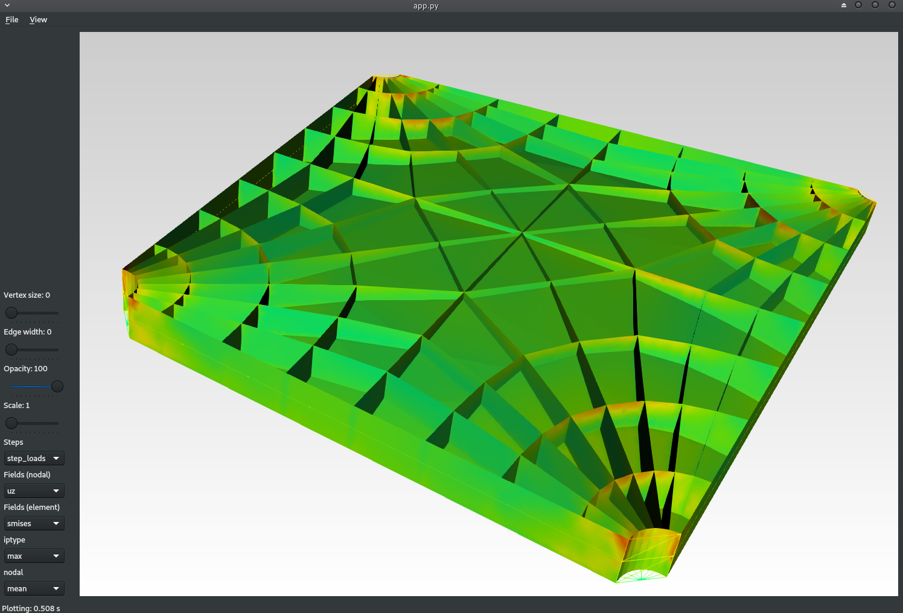
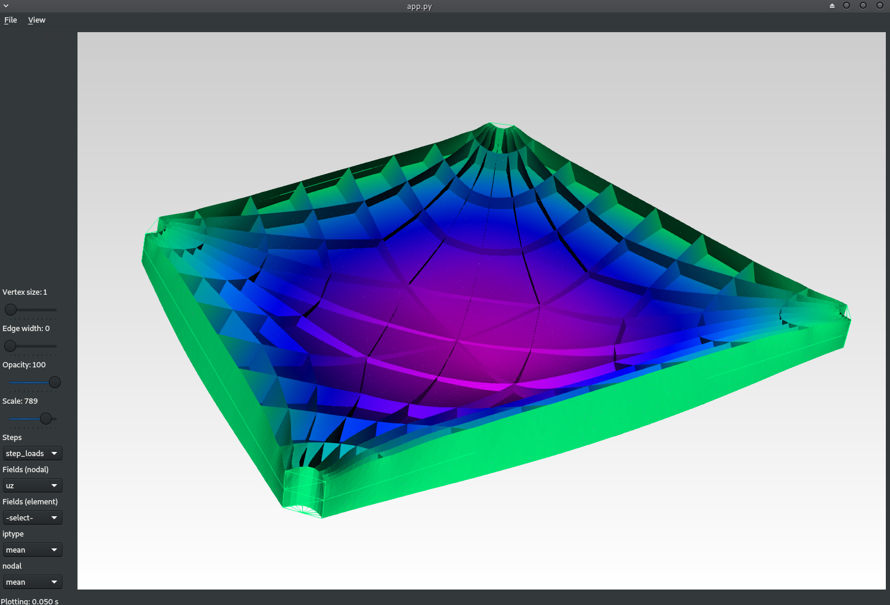

App
This page describes the use of the compas_fea App, which can be used for visualising the geometry of the created Structure and for plotting the results from an analysis. The App is still experimental and has only limited functionality, it requires PyOpenGL, VTK and PyQt5 to function.
Viewing the Structure
The App may be invoked by using the .view() method, which will take the geometry information stored in the .nodes and .elements dictionaries, and plot a 3D representation of the Structure in a graphical user interface. To load and view a Structure from an existing .obj' file, use the following code:
from compas_fea.structure import Structure
fnm = '/home/al/mesh_floorroof.obj' # location of .obj file
mdl = Structure.load_from_obj(fnm) # load Structure from .obj file
mdl.view() # open the App
The App will plot 1D line elements in blue for beams, red for trusses and yellow for springs, and plot 2D shell elements as mesh faces in green. The Opacity slider on the left-hand-side changes the transparency of the mesh and its edges, and the Vertex size slider adjusts the size of the structural nodes (set to zero for no node display).
{kind=link}
Using the Edge width slider allows the thickness of the mesh face edges to be altered, if this is taken to zero (i.e. edge display turned off), this may help to more clearly see the main structure by hiding the individual discretised elements.
{kind=link}
Nodal and element analysis results can be plotted on top of the visualisation mesh, by first selecting the relevant Step from the Steps listbox, and then selecting the field of interest from either the Fields (nodal) or Fields (element) listboxes. Note: that the first Step (here step_bc) that is associated with the structure’s displacement boundary conditions before loading, will not have any analysis results to plot.

For the element data, use the iptype and nodal listboxes, which have entries of min, max and mean, to further adjust the way element data is transferred to the nodes as vertex colours on the visualisation mesh.
{kind=link}
The analysis results will be plotted on the deformed structure for the selected Step. To change the scale of the deformations use the Scale slider, by default deformations are scaled to 1, they can be turned off by setting this slider to 0, or magnified up to a scale of 1000.
{kind=link}